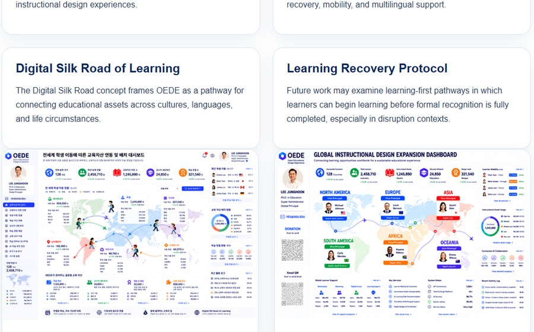

KSET Paper
Current OEDE Research
The current paper presents OEDE as an Open Educational Design Ecosystem that connects and accumulates distributed instructional design experiences.

OEDE 연구는 국내 학술 논문을 기반으로 국제 학술 논의와 글로벌 교육협력으로 확장될 수 있습니다.
Korean paper
International presentation
Model refinement
Learning technology discussion
Global cooperation

The current paper presents OEDE as an Open Educational Design Ecosystem that connects and accumulates distributed instructional design experiences.

Future work may discuss learning recovery, mobility, multilingual support, and global educational collaboration.
OEDE frames educational assets as a connected pathway across cultures, languages, schools, and life circumstances.
Future work may examine learning-first pathways in which learners begin learning before formal recognition is fully completed.
OEDE can become a shared academic space for discussing sustainable educational asset connection.